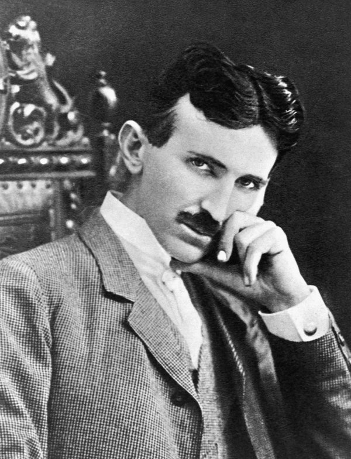

About Nikola Tesla
Nikola Tesla was a Serbian-American inventor and electrical engineer, born in 1856 in the village of Smiljan and died in New York in 1943. He is best known for designing the alternating current system that is still used to deliver electricity to homes today. During his life he registered around three hundred patents, among them the induction motor and the Tesla coil. He worked for a short time with Thomas Edison, and later became his main rival in the so-called war of the currents. Tesla died alone and almost without money, but the unit of magnetic flux density now carries his name.
Important events in his life
- 1856 — born in Smiljan, in what is now Croatia.
- 1884 — moves to the United States and starts working for Edison.
- 1887 — builds the first working induction motor.
- 1891 — invents the Tesla coil and becomes a US citizen.
- 1893 — his alternating current lights the Chicago World's Fair.
- 1943 — dies in New York at the age of eighty-six.
Main inventions and contributions
- Alternating current (AC) power system
- The induction motor
- The Tesla coil
- Radio remote control
- Early work on wireless transmission of energy
Read more
If you want to know more about his life, these two pages are a good place to start: the Britannica article gives a short overview, and the Tesla Science Center tells the story of his last laboratory.
Learn more